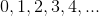
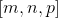
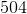
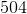
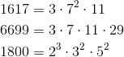

Multiplii comuni
Multiplii comuni a două sau a mai multor numere naturale
Pentru a obține multiplii unui număr natural, înmulțim numărul respectiv cu .
Mulțimea formată cu numerele obținute se numește mulțimea multiplilor numărului respectiv.
Cum șirul este infinit, avem că și mulțimea multiplilor unui număr natural este infinită.
Fie  și
și  două numere naturale nenule.
două numere naturale nenule.
Notăm cu  mulțimea multiplilor lui și cu
mulțimea multiplilor lui și cu  mulțimea multiplilor lui .
mulțimea multiplilor lui .
Pentru a obține mulțimea multiplilor comuni celor două numere și , se face intersecția mulțimilor și , adică se formează o mulțime care conține doar elementele comune celor două mulțimi.
Această mulțime a multiplilor comuni o vom nota cu  și este infinită.
și este infinită.
Analog se procedează pentru trei sau mai multe numere.
Se determină mulțimea multiplilor pentru fiecare număr în parte.
Se face intersecția tuturor mulțimilor obținute și astfel se obține mulțimea multiplilor comuni.
Cel mai mic multiplu comun (c.m.m.m.c.)
Cum mulțimea multiplilor comuni a două sau a mai multor numere naturale este infinită, nu putem spune cu precizie care este cel mai mare multiplu comun.
Putem însă preciza care este cel mai mic multiplu comun a două sau mai multe numere naturale nenule (c.m.m.m.c.): cel mai mic element al mulțimii multiplilor comuni.
Astfel, pentru a determina care este cel mai mic multiplu comun a două sau mai multe numere naturale, se descompune numărul natural în produs de puteri de factori primi, după care se aleg toți factorii primi comuni și necomuni la puterea cea mai mare, o singură dată, și se înmulțesc între ei.
Rezultatul obținut este cel mai mic multiplu comun al numerelor considerate.
Notații:
- c.m.m.m.c. al numerelor naturale nenule m și n se notează cu
![[m,n]](https://liceunet.ro/media/webbooks/667/5939/images/equations/rrnkyyfowwpbwejp9_nzma==.gif) ;
; - c.m.m.m.c. al numerelor naturale nenule m, n și p se notează cu  etc.
Există o relație între cel mai mare divizor comun și cel mai mic multiplu comun.
Propoziția NN35: Relația dintre c.m.m.d.c. și c.m.m.m.c.
Fie numerele naturale m și n. Produsul dintre c.m.m.d.c. și c.m.m.m.c. este egal cu produsul numerelor.
![(m,n)\cdot \left [ m,n \right ]=m\cdot n,](https://liceunet.ro/media/webbooks/667/5939/images/equations/ezdllqfrxxbkilaksuvhtw==.gif)
 .
.
Exemple:
Descompunerile numerelor de mai jos se găsesc în exemplele de la Cel mai mare divizor comun (c.m.md.c.) - exemple, din subcapitolul Divizori comuni - exemple.
- Fie numerele
 și
și  .
.
Deci, avem:

![\begin{align*} \Rightarrow \left [ 124,92 \right ]&=2^2\cdot23\cdot31\\ &=4\cdot23\cdot31\\ &=92\cdot31\\ &=2852. \end{align*}](https://liceunet.ro/media/webbooks/667/5939/images/equations/e9bbqjt7w1wtg0g8a8cktg==.gif)
 al numerelor și este
al numerelor și este  .
.
- Fie numerele
 și .
și .
Deci:

Atunci:
![\begin{align*} \left [ 1023,504 \right ]&=2^3\cdot3^2\cdot7\cdot11\cdot31\\ &=8\cdot9\cdot77\cdot31\\ &=72\cdot77\cdot31\\ &=5544\cdot 31\\ &=171864. \end{align*}](https://liceunet.ro/media/webbooks/667/5939/images/equations/8h8r25m1izaxzaxmjqgdxa==.gif)
al numerelor și este  .
.
- Fie numerele
 ,
,  și
și  .
.
Avem:

Atunci:
![\begin{align*} \left [ 1617,6699,1800 \right ]&=2^3\cdot3^2\cdot5^2\cdot7^2\cdot11\cdot29\\ &=8\cdot9\cdot25\cdot49\cdot11\cdot29\\ &=72\cdot25\cdot49\cdot11\cdot29\\ &=1800\cdot49\cdot11\cdot29\\ &=88200\cdot11\cdot29\\ &=970200\cdot29\\ &=28135800. \end{align*}](https://liceunet.ro/media/webbooks/667/5939/images/equations/bcs1sbuisflvzx9-cjkuow==.gif)
Deci,  al numerelor , și este
al numerelor , și este  .
.